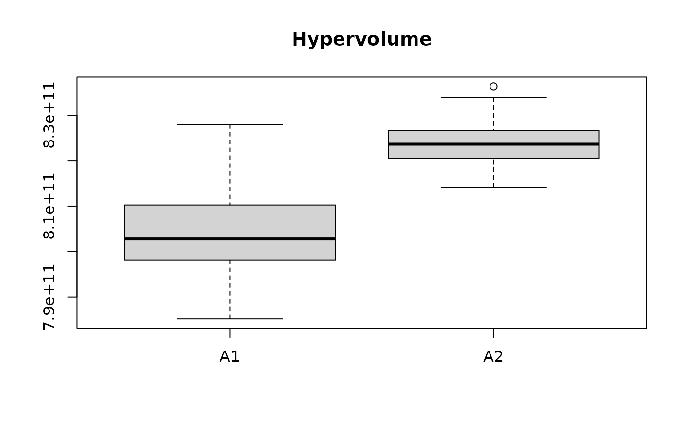
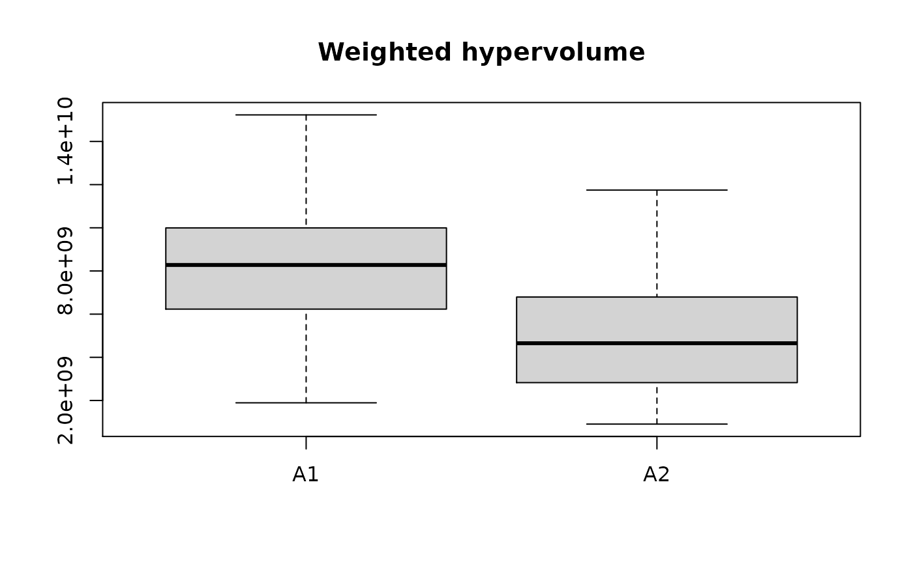

R/interactive.R
choose_eafdiffplot.RdThe function choose_eafdiffplot() creates the same plot as eafdiffplot()
but waits for the user to click in one of the sides. Then it returns the
rectangles the give the differences in favour of the chosen side. These
rectangles may be used for interactive decision-making as shown in
Diaz and López-Ibá{ñ}ez (2021)
. The function choose_eafdiff() may be used in a
non-interactive context.
choose_eafdiffplot( data.left, data.right, intervals = 5, maximise = c(FALSE, FALSE), title.left = deparse(substitute(data.left)), title.right = deparse(substitute(data.right)), ... ) choose_eafdiff(x, left = stop("'left' must be either TRUE or FALSE"))
| data.left, data.right | Data frames corresponding to the input data of
left and right sides, respectively. Each data frame has at least three
columns, the third one being the set of each point. See also
|
|---|---|
| intervals | ( |
| maximise | ( |
| title.left, title.right | Title for left and right panels, respectively. |
| ... | Other graphical parameters are passed down to
|
| x | ( |
| left | ( |
matrix where the first 4 columns give the coordinates of two
corners of each rectangle and the last column. In both cases, the last
column gives the positive differences in favor of the chosen side.
Juan Esteban Diaz, Manuel López-Ibáñez (2021). “Incorporating Decision-Maker's Preferences into the Automatic Configuration of Bi-Objective Optimisation Algorithms.” European Journal of Operational Research, 289(3), 1209--1222. doi: 10.1016/j.ejor.2020.07.059 .
# \donttest{ extdata_dir <- system.file(package="eaf", "extdata") A1 <- read_datasets(file.path(extdata_dir, "wrots_l100w10_dat")) A2 <- read_datasets(file.path(extdata_dir, "wrots_l10w100_dat")) if (interactive()) { rectangles <- choose_eafdiffplot(A1, A2, intervals = 5) } else { # Choose A1 rectangles <- eafdiff(A1, A2, intervals = 5, rectangles = TRUE) rectangles <- choose_eafdiff(rectangles, left = TRUE) } reference <- c(max(A1[, 1], A2[, 1]), max(A1[, 2], A2[, 2])) x <- split.data.frame(A1[,1:2], A1[,3]) hv_A1 <- sapply(split.data.frame(A1[, 1:2], A1[, 3]), hypervolume, reference=reference) hv_A2 <- sapply(split.data.frame(A2[, 1:2], A2[, 3]), hypervolume, reference=reference) boxplot(list(A1=hv_A1, A2=hv_A2), main = "Hypervolume")whv_A1 <- sapply(split.data.frame(A1[, 1:2], A1[, 3]), whv_rect, rectangles=rectangles, reference=reference) whv_A2 <- sapply(split.data.frame(A2[, 1:2], A2[, 3]), whv_rect, rectangles=rectangles, reference=reference) boxplot(list(A1=whv_A1, A2=whv_A2), main = "Weighted hypervolume")# }